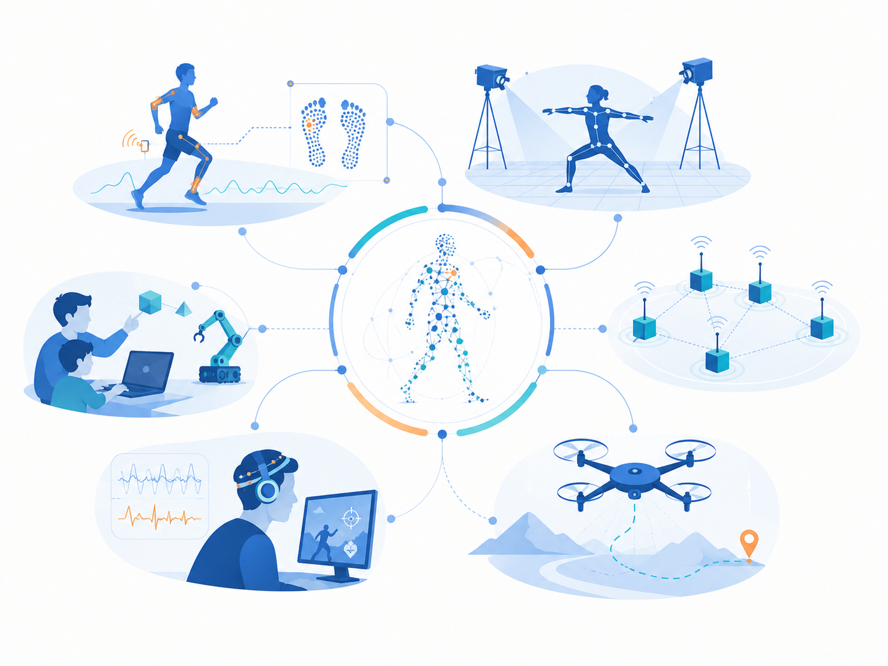
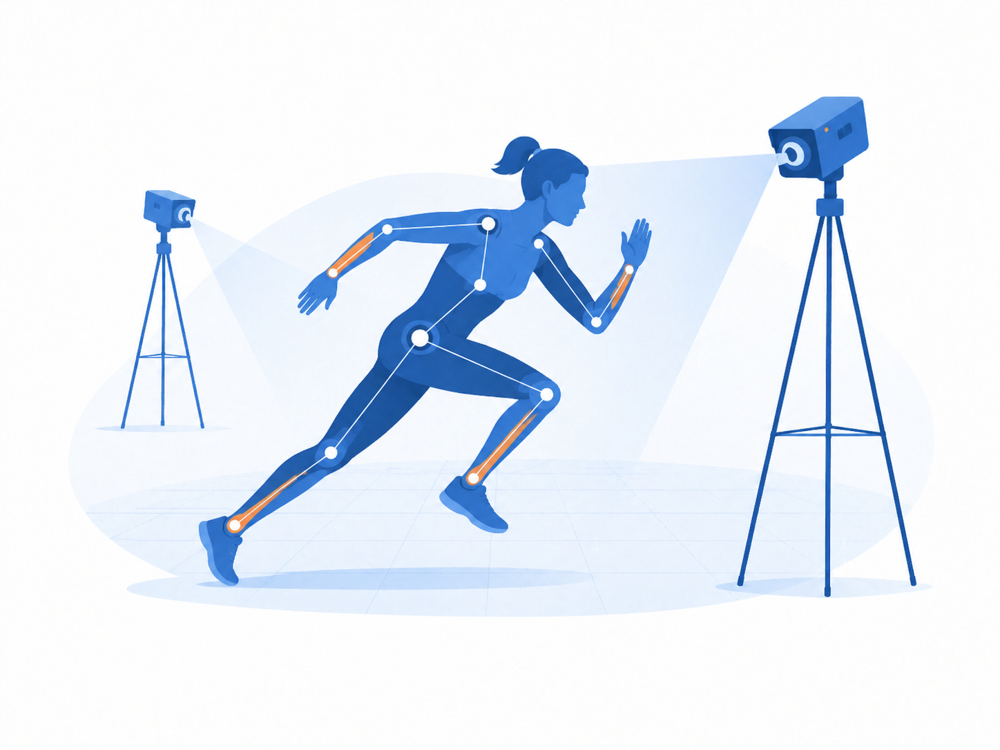
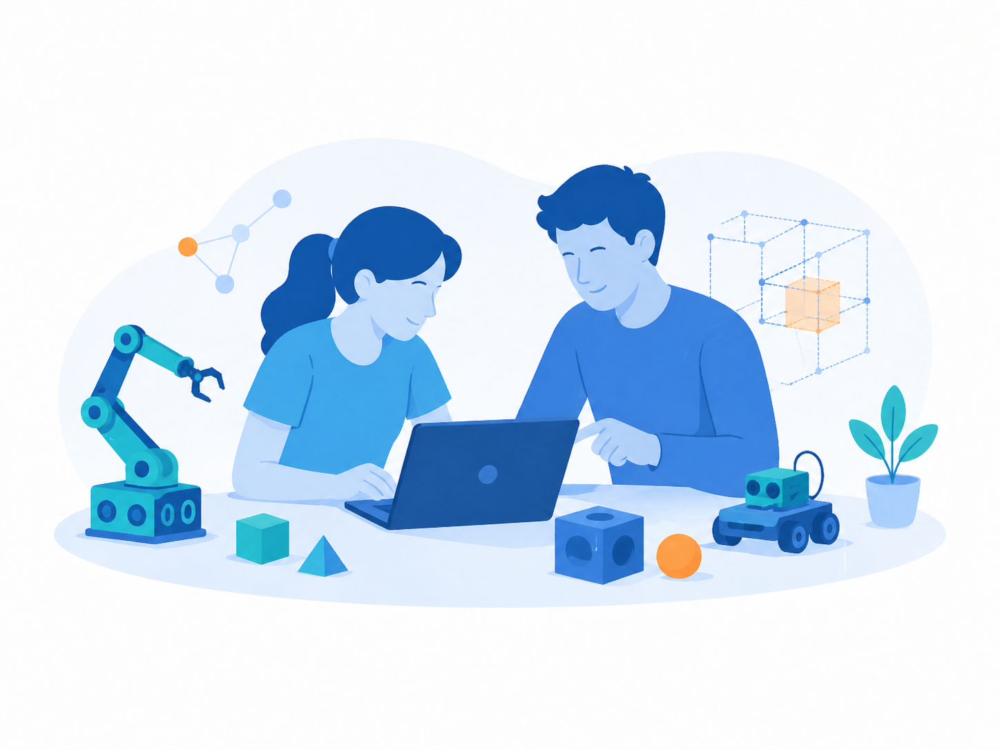
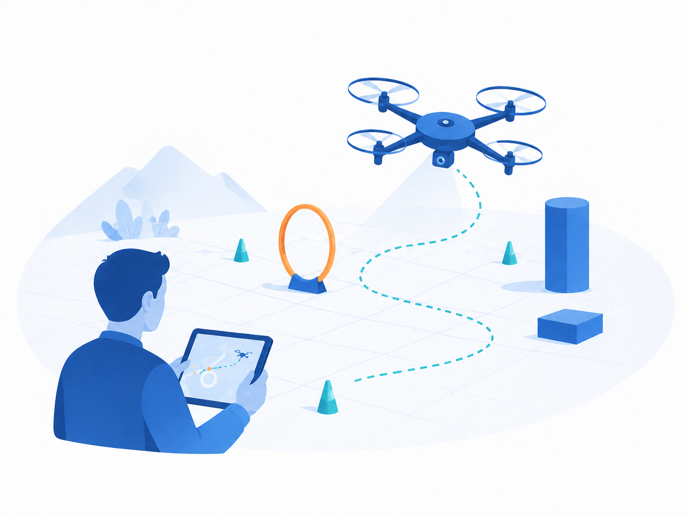
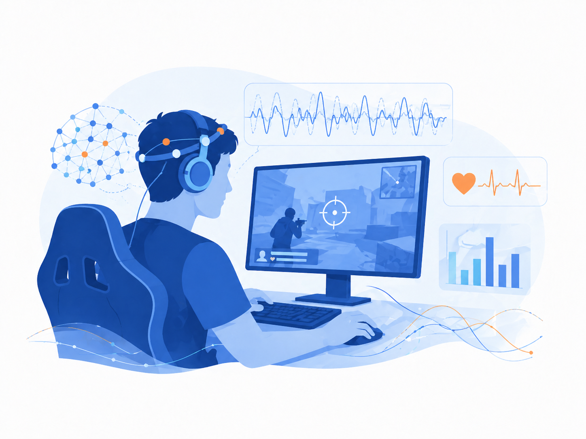

研究の方向性
人の動き、センサから得られる環境情報、教育現場での学びを対象に、 健康支援、個人認証、学習支援、地域課題の解決につながる情報システムを研究しています。
河並研究室では、組込みシステム、IoT、センサネットワーク、AIを基盤として、 人の行動や環境を計測・解析し、健康、教育、地域社会に役立つ情報システムの研究開発に取り組んでいます。

センサでデータを取得し、AIや情報処理で分析し、システムとして実装し、実世界での活用まで見据える。 この流れを大切にして研究テーマを設計しています。
人の動き、センサから得られる環境情報、教育現場での学びを対象に、 健康支援、個人認証、学習支援、地域課題の解決につながる情報システムを研究しています。
河並の自己紹介と、研究室の年度別活動記録は別ページに整理しています。
スポーツ、ゲーム、ものづくり、日常の疑問・関心・仮説を、センサやAIなどの情報技術を使って確かめる研究につなげていきます。教職を目指す人は、教職課程で学ぶ中で生まれた疑問やアイデアを、教材開発や学習支援の研究として探究できます。以下は現在の研究室で扱っているテーマです。オリジナルテーマも歓迎します。
これまでの研究成果は活動履歴を確認してください。

歩容データを用いた個人認証や、歩行環境を考慮した異常歩行・疲労状態の推定に取り組みます。
組込みシステム開発や低消費電力無線センサネットワークの評価に取り組みます。

IoTプロトタイピング、ドローン、おもちゃハック等、ものづくりを活用し、体験を通じて学べる教材を開発します。

GPSを利用できない屋内小型ドローンを対象に、外部センサを用いた認識・追跡・安全飛行支援を研究します。

操作ログ、生体情報、姿勢、反応時間などから、状態やパフォーマンスを分析します。
プレイ動画を解析し自動での実況生成や、プレイヤーのトレーニング支援ツールを開発します。
アイデアを考えるだけでなく、実際に測り、動かし、確かめる。研究テーマに応じて、さまざまな機器や計算環境を活用できます。
モーションキャプチャやインソール型歩行センサ、各種ウェアラブルセンサ・生体センサを使い、人の動きや状態を計測できます。
様々なセンサやマイコン、無線通信機器、小型ドローンなどを使い、自分で考えた装置やシステムを試作・検証できます。センサの開発や、機器を動かすプログラムの実装にも取り組めます。
複数台の高性能GPUサーバを活用し、テーマに応じたAIモデルの学習・推論やデータ解析に取り組めます。取得したデータの可視化・統計処理、生成AI（LLM/VLM等）を使ったシステムの実装も行います。
テーマがまだ決まっていなくても、研究室で相談できます。関心や疑問を話すところから始め、必要な学習と検証を重ねながら、問いを深めていきます。
教員や4年生、大学院生との相談を通して、関心に合う研究の方向性と必要な知識・技術を整理します。
基礎を学び、実装と実験に取り組みます。実験条件を設計し、データ収集・分析を通して性能や結果の妥当性を評価します。
修士研究では、長期データや追加実験、評価指標、比較検証を加え、研究の独自性を高めます。さらに研究を続けたい場合は、博士課程への進学も選択肢になります。
卒業研究や修士研究の成果を文章や発表にまとめます。テーマや進捗に応じて、学会発表・論文執筆や投稿、公開リポジトリ、教育・地域連携を通じて発信する機会もあります。
卒業研究で試した結果、さらに確かめたいことが見えてくる。大学院は、その問いに腰を据えて取り組む選択肢です。
大学院進学は、研究者になるためだけの選択肢ではありません。自分の関心や将来の進路と照らし合わせて、検討できます。 実験を設計する力、データを分析する力、システムを作り切る力、成果を文章や発表で伝える力は、 開発職、AI、IoT、データ分析、教育DXなど、さまざまな分野で役立ちます。
最後に、河並が博士課程1年（2002年）の時に書いたエッセイを恥ずかしいけど紹介。
研究テーマ、配属、大学院進学、共同研究、教育活動に関心がある場合は、まずは気軽に相談してください。
〒921-8501 石川県野々市市扇が丘7-1
金沢工業大学 扇が丘キャンパス 31号館3階
居室：31号館310室 / 研究室：31号館307室